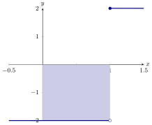

At this point we have three “different” integrals.
At this point we have three different “integrals.” Let’s see if we can sort out the
differences.
Indefinite integrals
An indefinite integral, also called an antiderivative computes classes of functions:
Here there are no limits of integration, and your answer will have a “” at the end.
Pay attention to the notation:
Where . Indefinite integrals
havedo not have
limits of integration, and they compute
signed areaan antiderivativea class of
antiderivatives
.
Two students, say Devyn and Riley, are working with the following indefinite
integral: Devyn computes the integral as and Riley computes the integral as Which
student is correct?
Devyn is correct Riley is correct Both students are correct
Neither student is correct
Both students are correct! The seeming discrepancy arises from the fact that the
“+C” in each case is different!
Accumulation functions
An accumulation function, also called an area function computes accumulated
area: This is a function of whose derivative is , with the additional property that .
Pay attention to the notation:
Where . Accumulation functions
havedo not have
limits of integration, and they compute
signed areaan antiderivativea class of
antiderivatives
.
True or false: There exists a function such that
Let this is an accumulation function and , since no area is accumulated yet.
However, . Hence there can be no such function . On the other hand, there is a
function with namely, . This subtlety arises from the fact that an accumulation
function gives a specific antiderivative of , the one that when evaluated at is zero.
Definite integrals
A definite integral computes signed area: Here we always have limits of
integration, both of which are numbers. Moreover, definite integrals have definite
values, the signed area between and the -axis. Pay attention to the notation:
Where . Definite integrals
havedo not have
limits of integration, and they compute
signed areaan antiderivativea class of
antiderivatives
.
Consider If we compute an antiderivative of , we find Is it correct to say
Perhaps the first thing to do would be to attempt to analyze this geometrically.
Here we see our function and the signed area computed by the integral:

From the graph above, we can see that So now the question is, “what went wrong”
above? In this case our function is
not continuous! For The Fundamental Theorem
of Calculus to apply, the integrand
must be continuous on the interval that one is
integrating on. If this is not the case, the fundamental theorem may or may not yield
valid results.